Download Link
Jmr download link:http://www.jmr-source.com/downloads/jmr_1.0.0/site.xml
Operating System
Currently only supports Windows; future versions will support Mac, Linux, etc.
Applicable Versions
- Eclipse 4.2 ~ 4.6, including various versions can be installed directly, such as:
- Java Edition
- Java EE Edition
- Android Edition
- PHP Edition
- C/C++
- JavaScript
- Other versions...
- Eclipse 3.5 ~ 3.7, Java EE version can be installed directly. Other versions need to install WTP and GEF plugins manually.
- MyEclipse 9 10 2014 2015 2016。
Eclipse Installation
In the Eclipse menu bar, click Help -> Install New Software -> Add
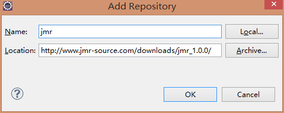
Check Basic, Jet, and Jmr, click Next until the download and installation are complete, then restart Eclipse.
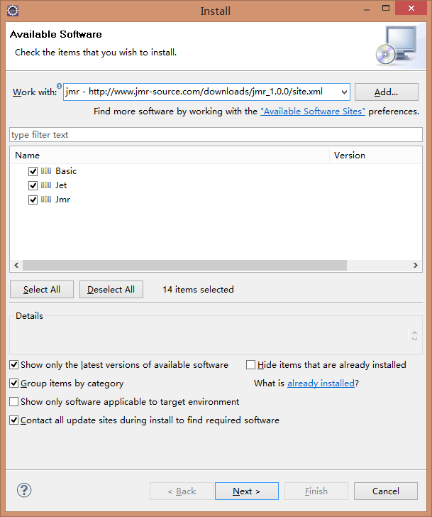
Keep clicking Next until the installation finishes. If the installation is slow or stuck, uncheck 'Contact all update...' and reinstall.
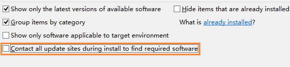
After installation, you will be prompted to restart. After restarting, you will be prompted to start initialization. Click Yes to start initializing Jmr components.
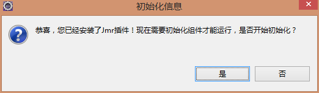
After initializing the components, restart Eclipse again.
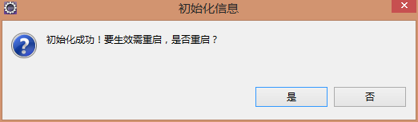
Installation successful. You can see the Jmr icon in the toolbar.
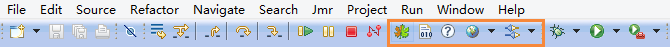
MyEclipse Installation
In the menu bar, select Window -> Preferences -> General -> Capabilities, check Classic Update, click Apply, and restart MyEclipse.
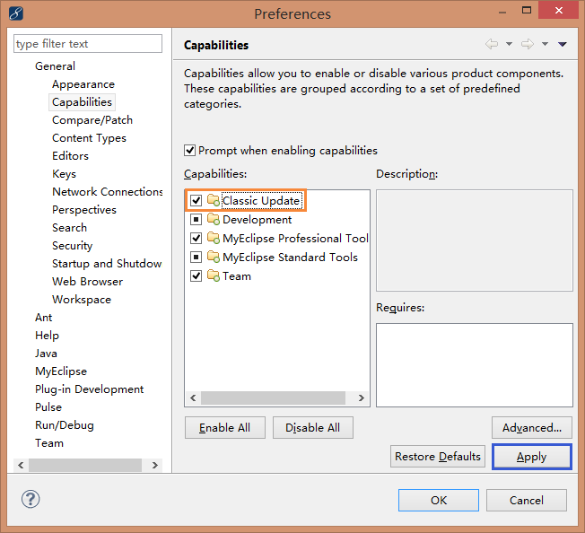
The subsequent installation is the same as Eclipse, but there are a few points to note.
- You need to uncheck the 'Contact all update...' option.
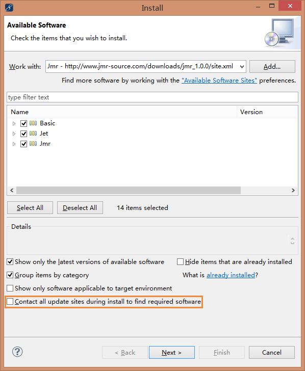
- For MyEclipse 2014, 2015, 2016, when you reach this page during installation, select 'Update my installation the same...'
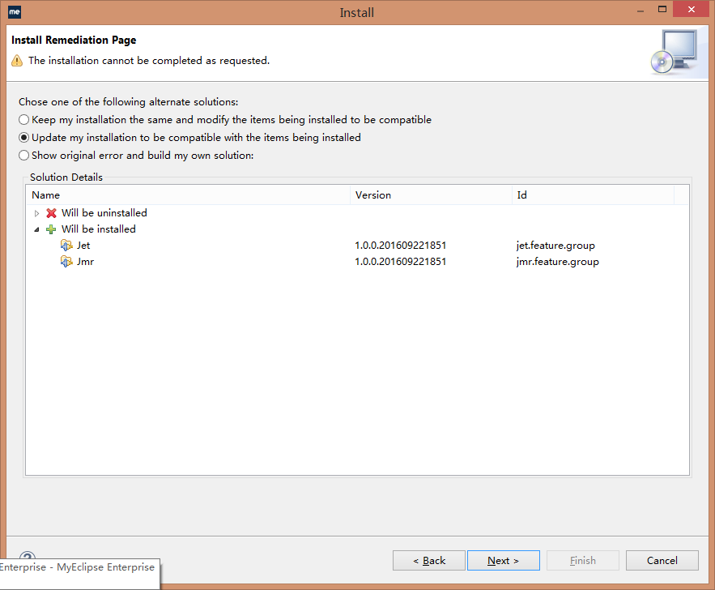
- After installation, if it still doesn't work, simply restart MyEclipse.
Uninstall
Click Uninstall in the toolbar.
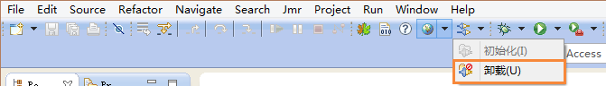
Click Yes to start uninstalling.
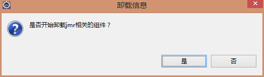
To completely remove the Jmr plugin, click Yes.
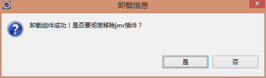
Click Confirm.
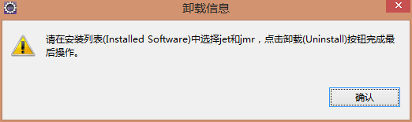
Select the Jet and Jmr components, click Uninstall to complete the final uninstallation, then restart Eclipse.
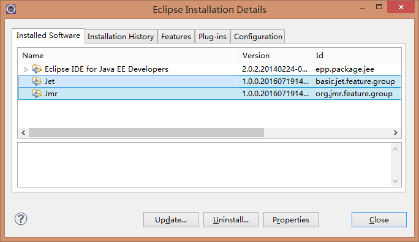
Update
In the menu bar, click Help -> Check for Updates.
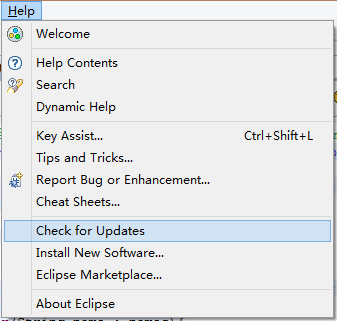